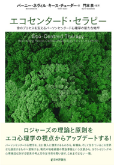
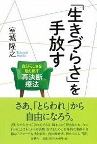
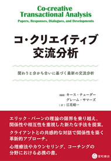
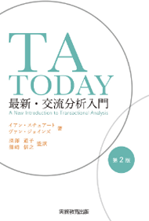

資料・連携情報
RESOURCES & PARTNERSHIPS
- TAベイシックス
- 資料・文献
- 連携組織
TAベイシックス
TA101の教科書として執筆されたコンパクトな入門書です。
一般書店では販売していません。
購入希望の方は、お問合せフォームにて申し込んでください。
○○○○○○○○○○○○
価格：○○○○円
○○：○○○○
○○：○○○○
○○：○○○○
○○：○○○○
書籍リスト
実際にTA・ゲシュタルトによるセラピーグループの機会です。
自身について考える、インテンシブな学びの機会になります。
-

- B.ネヴィル＆K.チューダー、門本泉監訳「エコセンタード・セラピー」（日本評論社）
- 補足文が入ります。補足文が入ります。補足文が入ります。補足文が入ります。補足文が入ります。補足文が入ります。
-

- 室城隆之「生きづらさを手放す」（春秋社）
- 補足文が入ります。補足文が入ります。補足文が入ります。補足文が入ります。補足文が入ります。補足文が入ります。
-

- K.テューダー、江花昭一訳「コ・クリエイティブ交流分析」星和書店
- 補足文が入ります。補足文が入ります。補足文が入ります。補足文が入ります。補足文が入ります。補足文が入ります。
-

- I.スチュアート＆V.ジョインズ「TA TODAY」（実務教育出版）
- 補足文が入ります。補足文が入ります。補足文が入ります。補足文が入ります。補足文が入ります。補足文が入ります。
- E.バーン、繁田千恵監訳「心理療法としての交流分析」（星和書店）
- 補足文が入ります。補足文が入ります。補足文が入ります。補足文が入ります。
補足文が入ります。補足文が入ります。
- 繁田千恵著「自分の人生を変える交流分析」（風間書房）
- 補足文が入ります。補足文が入ります。補足文が入ります。補足文が入ります。
補足文が入ります。補足文が入ります。
- H.ハーガデン＆C.シルズ、深澤道子監訳「交流分析－心理療法における関係性の視点」（日本評論社）
- 補足文が入ります。補足文が入ります。補足文が入ります。補足文が入ります。
補足文が入ります。補足文が入ります。
- I.スチュアート「エリック・バーンの交流分析」（実業之日本社）
- 補足文が入ります。補足文が入ります。補足文が入ります。補足文が入ります。
補足文が入ります。補足文が入ります。
- V.ジョインズ＆I.スチュアート、白井幸子・繁田千恵訳「交流分析による人格適応論」（誠信書房）
- 補足文が入ります。補足文が入ります。補足文が入ります。補足文が入ります。
補足文が入ります。補足文が入ります。
- E.バーン、江花昭一訳「エリック・バーン人生脚本のすべて」（星和書店）
- 補足文が入ります。補足文が入ります。補足文が入ります。補足文が入ります。
補足文が入ります。補足文が入ります。
- S.スタイナー、白井幸子訳「交流分析の根底に流れるもの」（誠信書房）
- 補足文が入ります。補足文が入ります。補足文が入ります。補足文が入ります。
補足文が入ります。補足文が入ります。
- J.デュセイ、池見酉次郎監修「エゴグラム」（創元社）
- 補足文が入ります。補足文が入ります。補足文が入ります。補足文が入ります。
補足文が入ります。補足文が入ります。
Eric Berne Memorial Award受賞論文リスト
国際ＴＡ協会（ITAA）には，Eric Berne記念賞（以前は，「記念科学賞」と呼ばれていた。）というものがあります。
独創的で重要で，かつ創造的な出版物や論文により，TAに主要な貢献をした人と著作に贈られるものです。
この受賞者リストの最新版がITAAのホームページで公開されています。
今回，ITAAの許可を得て，このリストにワンクリックでジャンプできるボタンをTAAJのホームページ上に置くこととなりました。
是非，ボタンをクリックして，TAの貴重な論文のラインナップをご堪能ください。
受賞論文の多くは，ITAAの機関紙「TA ジャーナル」に掲載されていますが，現在ジャーナルのバックナンバーは，出版社SAGEのホームページ上で公開されています。
今回ご紹介するこの受賞論文リストには，これらの原本に到達可能なリンクが埋め込まれていますので，TAの重要概念となる「オリジナル」論文に手を伸ばすことができます。
このボタンから，ITAAの知の「目録」に入り，そこから実際の「宝」に触れてみてください！
- Eric Berne
- Memorial Award Winners>
IBOCトレーニングハンドブック
多くの人が、ＴＡを本気で学ぶにつれ、ＴＡを使って自分の職能を高めたい、仕事の専門性を高めたいと望むようになります。
こうした人たちのために、またＴＡの世界標準を適切に保つために，ITAA（国際ＴＡ協会）は長年にわたり、ＴＡを使う専門家としての国際的なトレーニングの在り方と試験の体制を整え、IBOCという組織を通して様々な情報と機会を提供しています。
「ITAAトレーニング・試験ハンドブック」は、資格取得までの体系と詳細について記したもので、世界無料で公開されているものです。
ただし、全て英語であり、世界のＴＡコミュニティの変化に合わせて随時改訂されていきます。
これが日本人トレイニーにとって最初の壁になっているという声が、多く当会に寄せられていました。
これを受けて当会では，ITAAの承認を受けて、邦訳版をホームページ上に掲載してきました。
ハンドブックは不定期に更新されますが、2021年は，2018年に続き、この邦訳を最新版に更新することとしています。
スピードを重視し、翻訳が終わった章から順次公開していくこととします。
また、書式や細かな用語の統一においては"Be perfect"のドライバーを捨てて、ハンドブックの概要を伝えることを優先します。
本格的に国際資格に挑戦する人は、いずれかの時点で、必ずハンドブックの原文に触れることになりますので、当ページで提供する邦訳は、そこへ到達するまでの「助け」として用いて頂ければ幸いです。
TAAJでは、自分のためにＴＡを使う方々に加え、国際的な標準に則ったトレーニングや資格を目指す人の応援をしていきます。
大会や研修機会と組み合わせてこのハンドブック（邦訳）を役立てていただければと思います。
（門本 泉、2021年7月）
連携組織
海外
- 国際ＴＡ協会（ＩＴＡＡ）
- https://www.itaaworld.org/
TA発祥の地、カリフォルニアに本拠地を置く、TA実践家の国際組織です。下部組織に国際資格認定委員会（International Board of Certification：IBOC）を持ち、国際的なトレーニングの標準を定め、資格取得のための試験をオーガナイズします。
- 欧州ＴＡ協会（ＥＡＴＡ）
- https://eatanews.org/
ヨーロッパにある様々なTAの組織やコミュニティがアフィリエイト団体として登録する組織です。ITAAと歩調を合わせながら、TAの普及、国際的トレーニング基準の維持、資格試験の実施等を行っています。
- ニュージーランドTA協会（Transactional Analysis Association of Aotearoa New Zealand）
- https://www.taaanz.nz/
ニュージーランドにおける最大のTAコミュニティです。毎年日本からも多くのトレイニーが大会等に参加しています。
国内
- 日本交流分析学会（Japanese Society of Transactional Analysis）
- https://www.js-ta.jp/